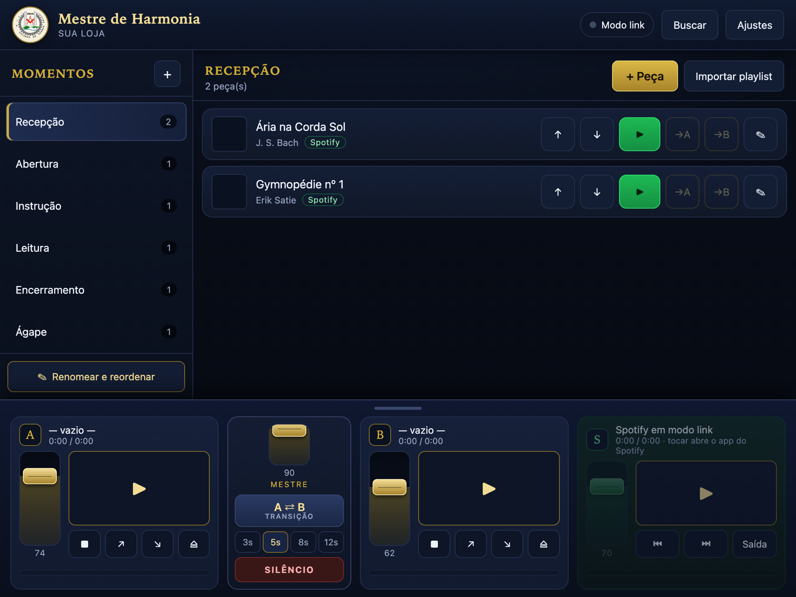
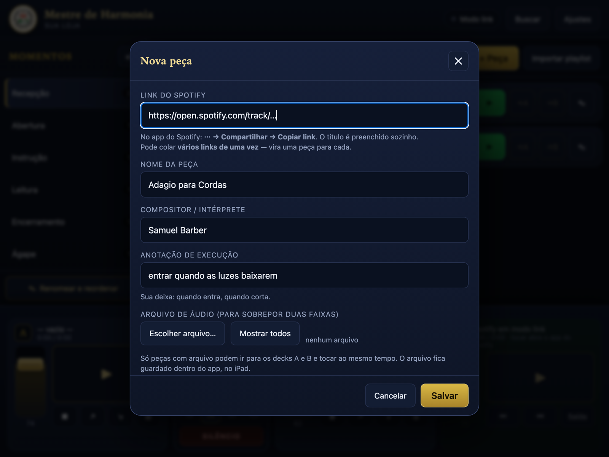

A∴R∴L∴S∴ Colunas de Pedras Grandes · Loja mãe do aplicativo
O painel de música da sessão. O roteiro do ritual na ordem certa, cada peça a um toque, e uma mesa de som para a trilha entrar por baixo antes da anterior acabar.
Em fase final de testes na Loja mãe. Disponível para as primeiras Lojas em breve.
Conduzir a música de uma sessão com o celular na mão é procurar faixa no meio do ritual, errar o momento e cortar o som na hora errada. O app resolve isso separando o repertório pelos passos do seu ritual.
Abertura, Cerimônia das Luzes, Cadeia de União, Encerramento… Você cria os momentos com os nomes do seu ritual e põe as peças em cada um, na ordem.
Cada peça guarda a sua deixa: “entrar no 3º golpe do malhete”, “cortar quando o Venerável sentar”. Fica escrito na linha da música.
Decks A e B com volume independente, fades e transição automática. É como a próxima trilha entra por baixo antes de a primeira terminar.
Corta tudo na hora, decks e Spotify. Para quando alguém pede a palavra e a música precisa sumir naquele segundo.
Sempre visível no rodapé, sem menu nem submenu. Os três canais ficam à mão durante toda a sessão.

Isto é o ponto mais importante de entender antes de usar, e não escondemos:
Você cola o link da faixa e o nome é preenchido sozinho. Um toque toca.
O Spotify comanda um player só. Não existe forma — em aplicativo nenhum, de ninguém — de tocar duas músicas dele ao mesmo tempo. A API não permite e os termos proíbem.
Peças com arquivo (MP3, M4A, WAV) vão para os decks A e B e tocam juntas, com volume independente. É a única forma de cruzar duas trilhas.
Não precisa converter o repertório inteiro: bastam as poucas peças que você realmente sobrepõe. O resto segue no Spotify.
Não passa por App Store nem Play Store. Abre no navegador e vira ícone na tela inicial, em tela cheia. Leva menos de um minuto.
No Spotify, na música: ⋯ → Compartilhar → Copiar link. No app: + Peça, colar, salvar. Dá para colar vários links de uma vez — vira uma peça para cada.

Há dois caminhos, escolhidos em Ajustes:
O aplicativo confere se a música realmente começou. Quando o comando não pega, ele abre a faixa no Spotify sozinho, em vez de deixar você no silêncio.
Ajustes → Exportar roteiro gera um arquivo com momentos, peças, links e anotações. Guarde no iCloud ou no Google Drive. Trocou de aparelho, é só importar.
Não para usar o app. O modo padrão só guarda os links e abre o Spotify ao tocar, e isso funciona com conta gratuita. O controle de dentro do painel é que exige Premium — limitação do Spotify, não do aplicativo.
O painel, o roteiro e os arquivos de áudio, sim. As faixas do Spotify não, porque quem toca é o Spotify.
Sim, entre os decks A e B, com arquivos de áudio. Com faixas do Spotify não é possível em aplicativo nenhum.
Não. Os downloads do Spotify são criptografados e ficam trancados dentro do aplicativo dele. Para os decks é preciso ter o arquivo de áudio por outra via.
O aplicativo, não — instala e já vem com uma estrutura de momentos para adaptar. O repertório é de cada Loja, montado colando os links do próprio acervo.
Só no aparelho. O aplicativo não tem servidor nem cadastro, e nada do que você escreve nele é enviado para fora. Veja a seção Sigilo.
Nada para instalar e usar. Se o aplicativo servir à sua Loja, pedimos uma contribuição voluntária para a obra beneficente que ele sustenta — o valor sugerido está acima.
As faixas do Spotify sim. Os decks A e B não: aplicativo web no celular ou tablet só toca em primeiro plano. Deixe o painel aberto durante a sessão — ele mantém a tela acesa sozinho enquanto houver som.
Um aplicativo que guarda a sequência dos trabalhos de uma Loja precisa responder a uma pergunta antes de qualquer outra: para onde vão esses dados?
O aplicativo não tem servidor próprio, nem banco de dados, nem cadastro. Não há conta para criar, nem senha, nem nuvem. Ele roda inteiro dentro do aparelho.
Nomes dos momentos, ordem da sessão, anotações de execução e arquivos de áudio ficam gravados só no tablet. Nada disso é enviado para lugar nenhum.
Não há repositório comum de roteiros. Cada Loja monta o seu, no seu aparelho, e ele não sai de lá. Nem quem desenvolveu o aplicativo tem acesso.
A cópia de segurança gera um arquivo que fica com você, para guardar onde julgar adequado. Não sobe automaticamente para nenhum serviço.
Como o repertório é do Spotify, o aplicativo conversa com o Spotify — e apenas com ele:
Em nenhum dos dois casos vai junto o nome do momento, a ordem da sessão ou a anotação de execução. O Spotify sabe apenas qual música foi pedida — exatamente como saberia se você apertasse play no aplicativo dele.
O aplicativo nasceu de uma necessidade real de sessão e é livre para qualquer Loja usar. Não há chave, não há prazo, não há cobrança para instalar.
O que pedimos é outra coisa: se ele servir à sua Loja, contribua com a obra beneficente que ele sustenta. Cada contribuição vai integralmente para essa obra — não para quem desenvolveu.
[ Qual obra, o que ela faz e como o recurso é aplicado. ]
Para instalar na sua Loja, tirar dúvidas ou pedir ajuda a montar o repertório:
[ nome, e-mail ou WhatsApp ]